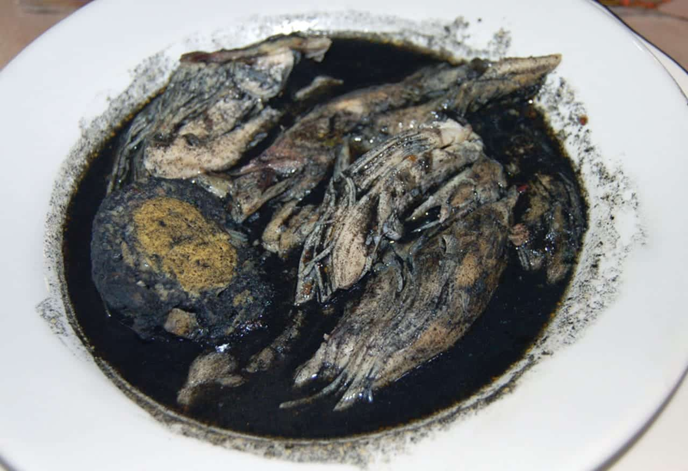
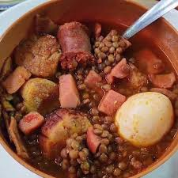
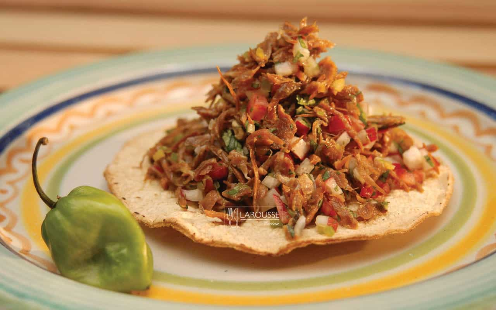

a) Al menos 2 archivos de la pagina inicial del cual trata su tema (HTML) (5 puntos)
Ir al lunes Ir al martes Ir al miercoles Ir al jueves Ir al viernes Ir para ver que se come en la playa Ir a la calculadora Ir a la página de JavaScript Ir a la página de ventas simuladas con JavaScript
PARTE DE PHP: Actividad integradora parcial 3
Ir a la SECCION DE PHP
Aunque hay varias teorías, la más aceptada es de origen práctico. Antiguamente, los domingos se sacrificaban los cerdos en los pueblos y las familias compraban la carne fresca para cocinarla al día siguiente. Además, al ser un plato que requiere poco esfuerzo de supervisión (se deja hervir mientras se hacen otras labores), era ideal para el "día de lavado" o el reinicio de la semana laboral.

El martes se come Relleno Negro principalmente por una cuestión de organización doméstica y economía familiar: tras el consumo de cerdo el lunes, se optaba por el ave (pavo o pollo) para variar la dieta, utilizando el rendidor "But" (bola de carne) y el recado negro (que ya se tenía preparado) para alimentar a familias grandes de forma práctica y sin tener que planificar un menú nuevo cada semana.

Se acostumbra comer este día para marcar el punto medio de la semana con una comida de "sustancia" o alto valor energético. Al ser un guiso de olla que combina legumbres, varias carnes y verduras, se considera un plato completo que permite "recargar pilas" para el resto de la jornada laboral, además de ser una forma eficiente de aprovechar los cortes de carne disponibles a mitad de la semana.

El jueves se eligió históricamente como un día de comida ligera y fresca para "descansar" el estómago después de los guisos pesados y grasosos del lunes (cerdo), martes (relleno negro) y miércoles (potaje). Es un plato frío que ayuda a mitigar el calor del mediodía y que permitía a las familias una preparación rápida antes de los preparativos de los platos más elaborados del fin de semana.

El viernes se consume Poc Chuc porque es una comida de convivencia y cierre. Al ser una carne que se prepara a la plancha o al carbón, el aroma marca el inicio del fin de semana. Además, históricamente, era un plato "limpio" y rápido de asar que permitía terminar las labores de la semana sin las largas horas de cocción que requieren los potajes o el relleno negro de los días anteriores.
| TABLA DE COMIDAS | Lunes | Martes | Miércoles | Jueves | Viernes |
|
|
|---|